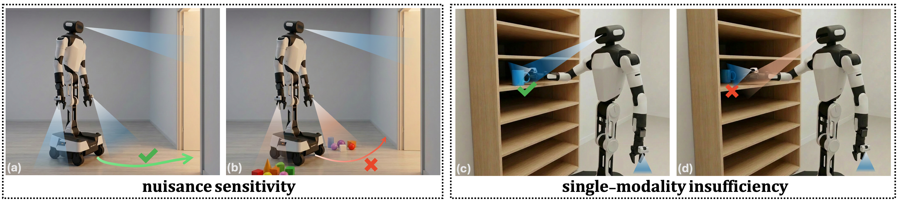
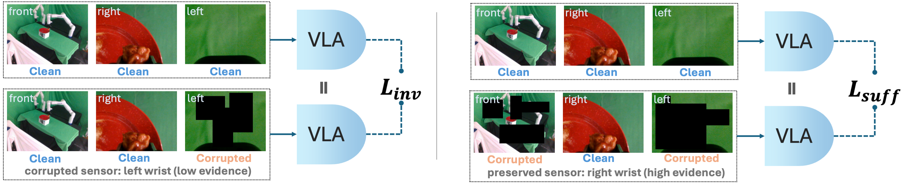
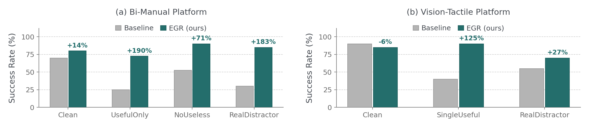

여러 카메라·촉각 센서를 쓰는 VLA(Vision-Language-Action) 정책은 "이번 프레임에 진짜 필요한 센서"와 "이번엔 아무 정보도 없는 센서"를 구분하지 못하고 전부에 얽매인다(modality entanglement, 모달 얽힘). 저자들은 각 프레임마다 각 센서가 얼마나 태스크에 관련 있는지를 시각(가시 물체 픽셀 면적)·촉각(접촉 유무·서명)으로 자동 계산해 "증거 점수(Evidence Score)"를 만들고, 이 점수를 게이트로 불필요 센서 흔들어도 액션 변하지 말 것(불변성)·필요 센서만 남아도 동일 액션 낼 것(충분성) 두 정규화 손실을 π0.5 학습에 얹는다. 인퍼런스 오버헤드 0. 실로봇 4태스크에서 클린 70→80%, 무용 센서 손상 52.5→90%(+71%), 단일 유용 센서만 25→72.5%(+190%), 물리 방해물 30→85%(+183%).
1배경 · 문제의식
현대 VLA(대표 예: π0.5, RDT, OpenVLA)는 여러 대의 카메라(머리·손목 각 방향)와 촉각 센서로부터 나오는 스트림을 통째로 받아 액션을 예측한다. 그러나 학습 데이터가 좁아, 정책은 아래 두 방향으로 잘못 배운다.
Nuisance Sensitivity (무용 센서 민감성): 이번 프레임엔 아무 태스크 정보가 없는 카메라(예: 반대편 손목 카메라)만 가려도 성공률이 급락. 정보량과 무관하게 학습 때 그 카메라가 항상 특정 값을 보였다는 통계적 결합에만 의존.
Single-Modality Insufficiency (단일 유용 센서 불충분): 반대로, 정답을 뽑아내기에 충분한 정보를 가진 유용 카메라 하나만 남기고 다른 것을 지워도 실패. 모든 센서가 항상 다 있어야만 동작하는 상태.
왜 이게 위험한가: 실제 배치 환경에선 렌즈가 흐려지거나(비/먼지), 물체가 다른 카메라 시야를 가리거나, 조명이 튀는 일이 필연적이다. 학습 데이터 분포와 다른 이 상황들에서 정책이 무너지면 곧 안전사고. 저자들은 이 문제를 "modality entanglement(모달 얽힘)"라 부르고, 학습 단계에서 얽힘을 풀어주는 정규화를 제안.
2핵심 Contribution
Modality entanglement의 두 실패 모드 정식화 — Nuisance Sensitivity와 Single-Modality Insufficiency로 나누고, 각각을 진단하는 데이터 필터·지표(NoUseless / UsefulOnly / SingleUseful)를 제안. BEHAVIOR-1K에서 47 스킬(11 내비게이션 + 36 조작)의 벤치를 큐레이션.
Evidence-Gated Regularization (EGR) — 각 프레임 t·센서 m에 대해 증거 점수 Et,m ∈ [0,1]을 계산(시각: 초점/상호작용 물체의 가시 픽셀 면적을 카메라 간 정규화; 촉각: 접촉 유무 또는 서명 유사도). 이 점수를 hinge weight로 써 두 손실을 게이트: 불변성 손실(낮은 E이면 그 센서 흔들려도 액션 불변)·충분성 손실(높은 E이면 그 센서만 남아도 동일 액션). 인퍼런스는 원본 π0.5와 동일 — 추가 계산 0.
시뮬·실로봇 광범위 검증 — BEHAVIOR-1K에서 47 스킬, 실로봇 두 셋업(양팔 3RGB·단팔 1RGB+2GelSight 촉각)에서 클린은 유지하거나 개선, 손상/제한 조건에선 +71%~+190% 상대 이득. Wilcoxon signed-rank test p<0.01 다수. ModDrop(랜덤 모달 드롭아웃) 대비 우위.
3Method
Evidence Score Et,m 계산 (프레임별·센서별 관련성)
핵심 아이디어는 "이번 프레임에서 이 센서에 태스크 정보가 얼마나 있는가?"를 학습 없이 태스크 구조에서 유도된 신호로 매기는 것.
시각(카메라)
인스턴스 분할로 초점 물체(focal object)·상호작용 대상의 픽셀 면적 비율 afocalt,m 측정. "상호작용 게이트"로 큰 배경 물체가 점수를 부풀리는 것을 방지. 카메라들 사이는 max 정규화: Et,m = st,m / maxm' st,m'.
촉각(GelSight 등)
희소 접촉(grasp·insertion): 접촉 유무 이진값. 지속 접촉: 미리 준비한 태스크 참조 서명과 현재 촉각 관찰의 특징 유사도 φtask.
직관: "이번 순간, 이 카메라 화면에 진짜 조작할 물체가 크게 보이나?"의 대답. 안 보이면 E≈0(불필요), 크게 보이면 E≈1(핵심). 이 점수는 학습 데이터 자체의 세그멘테이션 라벨에서 자동 계산되므로 사람 튜닝 불필요. 다만 시각·촉각의 태스크 신호를 사전에 지정해야 함(대상 물체가 뭔지 알아야 함) — 논문의 한계로 자인.
두 정규화 손실 (Invariance + Sufficiency)
정책 πθ는 관찰 ot(모든 센서 묶음)에서 액션 vθ(ot)를 낸다. τlow, τhigh 두 임계값(0~1 범위)으로 hinge weight winv·wsuff를 정의:
Invariance Loss (무용 센서 민감성 대응): ℒinv = Σt,m Gt · winv(Et,m) · ‖vθ(ot) − vθ(õt(m))‖²
"Et,m이 낮은 센서 m을 랜덤 이레이징으로 손상시킨 관찰 õt(m)과 원본 관찰이 같은 액션을 내야 한다"는 규제. 즉 안 중요한 센서 값이 흔들려도 액션은 안 변해야 한다.
Sufficiency Loss (단일 유용 센서 불충분성 대응): ℒsuff = Σt,m Gt · wsuff(Et,m) · ‖vθ(ot) − vθ(otm)‖²
"Et,m이 높은 센서 m 하나만 남긴 관찰 otm과 원본 관찰이 같은 액션을 내야 한다"는 규제. 즉 정보가 충분한 센서 하나만 있어도 정책이 그것만 보고 판단할 수 있어야 한다.
총 목적함수: ℒ = ℒflow-match + λinv·ℒinv + λsuff·ℒsuff. λinv=0.2, λsuff=0.1. ℒflow-match은 π0.5의 원래 flow-matching(무작위 노이즈에서 정답 액션 궤적으로 향하는 벡터장을 학습해 몇 스텝 만에 액션을 만들어내는 생성 방식) 손실 그대로.
계산 효율 (importance sampling)
순수하게 구현하면 매 스텝 2|M|번(센서마다 손상판·유용판) forward가 필요해 무겁다. 저자들은 hinge weight에 비례해 단일 센서를 뽑고 weight 합으로 스케일하는 importance sampling으로 forward를 상수로 줄인다(부록 D에 편향 없음 증명).
4실험 결과
Benchmark 구성 (BEHAVIOR-1K subset)
12 태스크·47 스킬(내비 11 + 조작 36) 큐레이션. 필터: (1) 프레임 80% 이상에서 초점 물체 가시, (2) 머리 카메라가 태스크 유용, (3) 손목 카메라 중 정확히 하나는 이번 태스크에 무용(=명확한 대조군). 평가 조건 5종: Clean / NoUseless(무용 센서 손상) / UsefulOnly(유용만 남김) / SingleUseful / RealDistractor(실로봇용).
Suite 2 — 성공률 (시뮬, π0.5)
조건
Vanilla π0.5
ModDrop
EGR (본 논문)
Rel. Δ
조작 · Full (clean)
12.5
—
16.4
+31%
조작 · NoUseless
9.4
—
16.5
+75%
조작 · UsefulOnly
2.8
—
6.1
+120%
내비 · Full
42.3
—
40.9
~유지
내비 · SingleUseful
15.5
—
37.3
+141%
36 조작 스킬 성공률은 절대값이 낮은 편(태스크가 매우 어렵기 때문)이지만, EGR의 상대 이득이 손상 조건일수록 커진다는 것이 핵심 주장. 20 trial/segment.
Suite 1 — 액션 이탈률 (액션 MSE 상승비, 낮을수록 좋음)
조건
Vanilla
EGR
조작 · NoUseless
+12.7%
+5.1%
조작 · UsefulOnly
+158.5%
+121.8%
"Δ = 손상시 MSE − Clean시 MSE" 지표. 롤아웃 없이 프레임별 액션 이탈만 재는 빠른 진단.
실로봇 결과 (양팔 Kinova 2 + 3 RGB; 4태스크 × 10 trial)
조건
Vanilla
EGR
Rel. Δ
Clean
70
80
+14%
NoUseless (무용 카메라 손상)
52.5
90
+71%
UsefulOnly (유용만 남김)
25
72.5
+190%
RealDistractor (물리 방해물)
30
85
+183%
클린 조건에서도 개선(+14%p), 손상/방해물 조건에서 대폭 이득. 각 셀은 4태스크 × 10회 = 40 trial 평균.
촉각까지 포함한 이종 센서 조합에서도 동일 패턴. Clean −5%p는 저자들이 시행횟수(N=20) 안의 잡음으로 봄.
5Ablation (주요 발견)
손실 요소 제거: Invariance만 → 무용 센서 조건은 개선되나 UsefulOnly엔 도움 안 됨. Sufficiency만 → 반대. 둘 다 필요.
ModDrop(랜덤 모달 드롭아웃) 비교: EGR이 모든 손상 조건에서 통계적으로 우위(Wilcoxon signed-rank p<0.01). 즉 "센서를 랜덤으로 지워 학습"만으로는 부족하고, 어떤 센서가 언제 중요한지의 신호가 결정적.
증거 점수 대체: Et,m을 균등값으로 바꾸면 이득 대부분 사라짐 — 태스크 구조 기반 신호가 핵심.
인퍼런스 오버헤드: 학습에만 손실이 추가되므로 배포 시 원본 π0.5와 완전히 동일한 지연.
6핵심 Figure / Table

Figure 1 — Modality entanglement의 두 실패 모드. 무용 센서를 가려도(왼쪽) 성공률이 떨어지고, 유용 센서만 남겨도(오른쪽) 실패. EGR은 두 방향의 얽힘을 학습 시 정규화로 풀어준다. (출처: arXiv:2609.03142)

Figure 2 — EGR 파이프라인. 각 프레임 각 센서에 대해 증거 점수 Et,m을 계산 → hinge weight로 게이트된 Invariance/Sufficiency 손실을 π0.5의 flow-matching 손실에 얹어 학습. 인퍼런스 오버헤드 0. (출처: arXiv:2609.03142)

Figure — 실로봇 결과. 클린은 유지·개선, 손상/제한/방해물 조건에서 큰 폭 이득. 특히 물리 방해물(RealDistractor) 30→85%(+183%). (출처: arXiv:2609.03142)
핵심 표(실로봇 양팔) — Clean 70→80(+14%), NoUseless 52.5→90(+71%), UsefulOnly 25→72.5(+190%), RealDistractor 30→85(+183%). 이 4개 값이 논문의 주장(모달 얽힘 해소가 배포 강건성으로 이어짐)의 핵심 근거.